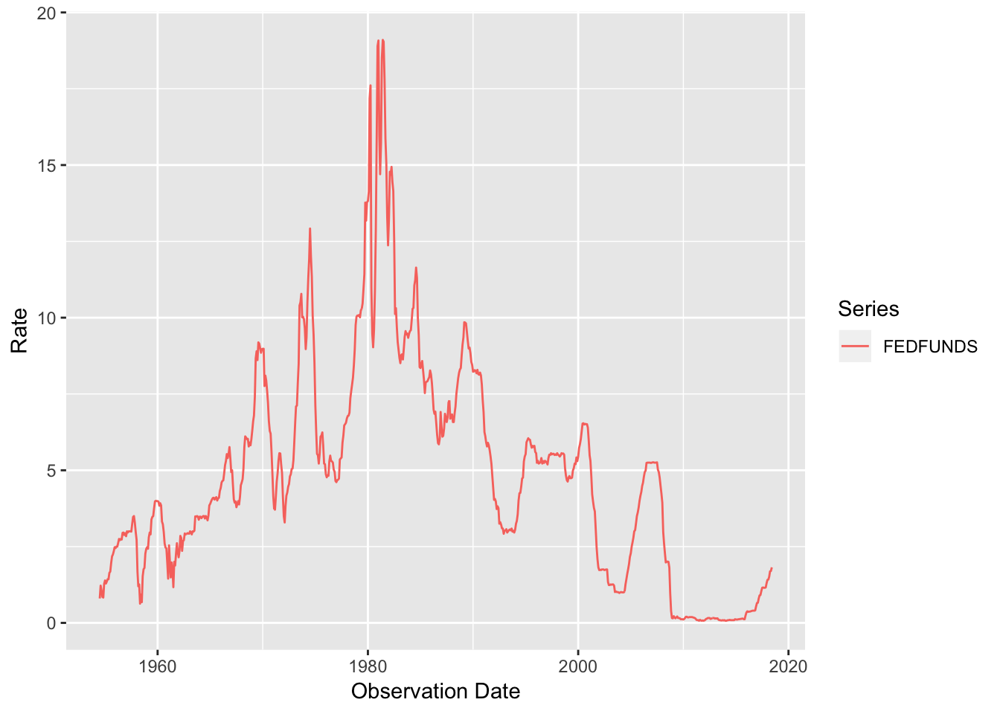
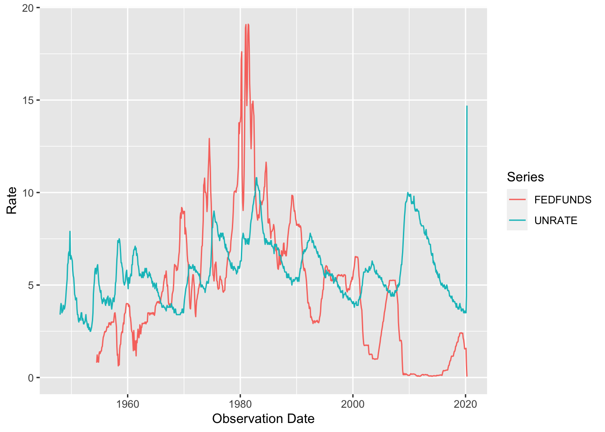

fredr provides a complete set of R bindings to the Federal Reserve Economic Data (FRED) RESTful API, provided by the Federal Reserve Bank of St. Louis. The functions allow the user to search for and fetch time series observations as well as associated metadata within the FRED database. The core functions are
fredr_set_key() - Set the required FRED API key for the session.fredr() or fredr_series_observations() - Fetch a FRED series.fredr_series_search_text() - Search for a FRED series by text.fredr_request() - Send a general request to the FRED API.Objects are returned as tibbles. The user is strongly encouraged to read the full FRED API documentation to leverage the full power of fredr and the FRED API.
install.packages("fredr")
To get the development version of the package:
# install.packages("devtools") devtools::install_github("sboysel/fredr")
Load package
library(fredr)
To use fredr and the FRED API in general, you must first obtain a FRED API key. It is also recommended to review the FRED API Terms of Use. Once you’ve obtained an API key, you can set the key as an environment variable using fredr_set_key
fredr_set_key("abcdefghijklmnopqrstuvwxyz123456")
where “abcdefghijklmnopqrstuvwxyz123456” is replaced with the actual key you obtain from FRED. This will set the key for the current session. You can persistently set the key by appending the line FRED_API_KEY=abcdefghijklmnopqrstuvwxyz123456 to an .Renviron file in the working directory or at the user level. This can be done using a text editor or by running usethis::edit_r_environ(). If you edit the .Renviron file, remember to either restart the session or run readRenviron(".Renviron") for the changes to take effect.
The fredr() function (an alias for fredr_series_observations()) retrieves series observations (i.e. the actual time series data) for a specified FRED series ID. The function returns a tibble with 3 columns (observation date, series ID, and value).
fredr( series_id = "UNRATE", observation_start = as.Date("1990-01-01") ) #> # A tibble: 364 x 3 #> date series_id value #> <date> <chr> <dbl> #> 1 1990-01-01 UNRATE 5.4 #> 2 1990-02-01 UNRATE 5.3 #> 3 1990-03-01 UNRATE 5.2 #> 4 1990-04-01 UNRATE 5.4 #> 5 1990-05-01 UNRATE 5.4 #> 6 1990-06-01 UNRATE 5.2 #> 7 1990-07-01 UNRATE 5.5 #> 8 1990-08-01 UNRATE 5.7 #> 9 1990-09-01 UNRATE 5.9 #> 10 1990-10-01 UNRATE 5.9 #> # … with 354 more rows
Leverage the native features of the FRED API by passing additional parameters:
fredr_series_observations( series_id = "UNRATE", observation_start = as.Date("1990-01-01"), frequency = "q", units = "chg" ) #> # A tibble: 122 x 3 #> date series_id value #> <date> <chr> <dbl> #> 1 1990-01-01 UNRATE -0.0667 #> 2 1990-04-01 UNRATE 0.0333 #> 3 1990-07-01 UNRATE 0.367 #> 4 1990-10-01 UNRATE 0.433 #> 5 1991-01-01 UNRATE 0.467 #> 6 1991-04-01 UNRATE 0.233 #> 7 1991-07-01 UNRATE 0.0333 #> 8 1991-10-01 UNRATE 0.233 #> 9 1992-01-01 UNRATE 0.267 #> 10 1992-04-01 UNRATE 0.233 #> # … with 112 more rows
fredr plays nicely with tidyverse packages:
library(dplyr) library(ggplot2) fredr_series_search_text( search_text = "federal funds", order_by = "popularity", sort_order = "desc", limit = 1) %>% pull(id) %>% fredr(series_id = .) %>% ggplot(data = ., mapping = aes(x = date, y = value, color = series_id)) + geom_line() + labs(x = "Observation Date", y = "Rate", color = "Series")

Since fredr() returns a tibble with a series ID, mapping fredr() over a vector of series IDs can be achieved as follows:
library(purrr) map_dfr(c("UNRATE", "FEDFUNDS"), fredr) %>% ggplot(data = ., mapping = aes(x = date, y = value, color = series_id)) + geom_line() + labs(x = "Observation Date", y = "Rate", color = "Series")

Using purrr::pmap_dfr() allows you to use varying optional parameters as well.
params <- list( series_id = c("UNRATE", "OILPRICE"), frequency = c("m", "q") ) pmap_dfr( .l = params, .f = ~ fredr(series_id = .x, frequency = .y) ) #> # A tibble: 1,139 x 3 #> date series_id value #> <date> <chr> <dbl> #> 1 1948-01-01 UNRATE 3.4 #> 2 1948-02-01 UNRATE 3.8 #> 3 1948-03-01 UNRATE 4 #> 4 1948-04-01 UNRATE 3.9 #> 5 1948-05-01 UNRATE 3.5 #> 6 1948-06-01 UNRATE 3.6 #> 7 1948-07-01 UNRATE 3.6 #> 8 1948-08-01 UNRATE 3.9 #> 9 1948-09-01 UNRATE 3.8 #> 10 1948-10-01 UNRATE 3.7 #> # … with 1,129 more rows
It is relatively straightforward to convert tibbles returned by fredr into other time series objects. For example,
fredr implements functions for all FRED API endpoints. For usage examples for these functions, please consult the relevant vignette:
Finally, fredr is packaged with a list of possible endpoints in the tibble named fredr_endpoints:
fredr_endpoints #> # A tibble: 31 x 3 #> endpoint type note #> <chr> <chr> <chr> #> 1 fred/category Categori… Get a category #> 2 fred/category/children Categori… Get the child categories for a specified pa… #> 3 fred/category/related Categori… Get the related categories for a category #> 4 fred/category/series Categori… Get the series in a category #> 5 fred/category/tags Categori… Get the tags for a category #> 6 fred/category/related… Categori… Get the related tags for a category #> 7 fred/releases Releases Get all releases of economic data #> 8 fred/releases/dates Releases Get release dates for all releases of econo… #> 9 fred/release Releases Get a release of economic data #> 10 fred/release/dates Releases Get release dates for a release of economic… #> # … with 21 more rows
To get the most out of the native features of the FRED API, it is highly recommended to review the API endpoint documentation. Within an R session, you can quickly access the web documentation for any endpoint with the convenience function fredr_docs(). The following example will open a web browser to the FRED API documentation page on the series/observations endpoint.
fredr_docs(endpoint = "series/observations")
You may also use the params option for fredr_docs to go straight to the endpoint’s Parameters section.
fredr_docs(endpoint = "category/related_tags", params = TRUE)
You can also use the low-level function fredr_request() to run more general queries against any FRED API endpoint (e.g. Categories, Series, Sources, Releases, Tags). The required parameter is endpoint (see fredr_endpoints for a list of valid endpoints) and then all API parameters are passed through as named arguments. For example:
fredr_request(endpoint = "tags/series", tag_names = "population;south africa", limit = 25L) #> # A tibble: 25 x 16 #> id realtime_start realtime_end title observation_sta… observation_end #> <chr> <chr> <chr> <chr> <chr> <chr> #> 1 LFWA… 2020-05-20 2020-05-20 Work… 2008-01-01 2019-01-01 #> 2 LFWA… 2020-05-20 2020-05-20 Work… 2008-01-01 2019-01-01 #> 3 LFWA… 2020-05-20 2020-05-20 Work… 2008-01-01 2019-10-01 #> 4 LFWA… 2020-05-20 2020-05-20 Work… 2008-01-01 2019-10-01 #> 5 LFWA… 2020-05-20 2020-05-20 Work… 2008-01-01 2019-01-01 #> 6 LFWA… 2020-05-20 2020-05-20 Work… 2008-01-01 2019-01-01 #> 7 LFWA… 2020-05-20 2020-05-20 Work… 2008-01-01 2019-10-01 #> 8 LFWA… 2020-05-20 2020-05-20 Work… 2008-01-01 2019-10-01 #> 9 LFWA… 2020-05-20 2020-05-20 Work… 2008-01-01 2019-01-01 #> 10 LFWA… 2020-05-20 2020-05-20 Work… 2008-01-01 2019-01-01 #> # … with 15 more rows, and 10 more variables: frequency <chr>, #> # frequency_short <chr>, units <chr>, units_short <chr>, #> # seasonal_adjustment <chr>, seasonal_adjustment_short <chr>, #> # last_updated <chr>, popularity <int>, group_popularity <int>, notes <chr>
By default, fredr_request() will return a tibble. Set to_frame to FALSE to return a generic response object from a httr::GET() request that can be further parsed with httr::content():
library(httr) fredr_request( endpoint = "series/observations", series_id = "UNRATE", to_frame = FALSE ) #> Response [https://api.stlouisfed.org/fred/series/observations?series_id=UNRATE&api_key=d3ef3490ef7270cf903d07141e9e7db7&file_type=json] #> Date: 2020-05-20 05:56 #> Status: 200 #> Content-Type: application/json; charset=UTF-8 #> Size: 81.9 kB